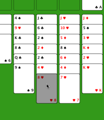

現在點擊了第二列，牌已經移動過去。你也可以點擊上方任意一個空當格，把這張牌移到那裡。
 空當接龍說明
空當接龍說明
進行一次移動很簡單。先點擊你要移動的牌（或位置），它會被高亮顯示。然後點擊目標位置，若符合規則就會完成移動。若你走錯了，可以隨時復原任意步數。

這裡我們要把紅桃 8 移到黑桃 9 上。此時第三列已被點擊，底部那張牌被高亮顯示。
現在點擊了第二列，牌已經移動過去。你也可以點擊上方任意一個空當格，把這張牌移到那裡。